Bureau of Cloud Management
The Bureau of Cloud Management (BCM) is a government agency of the alternate reality that oversees the entry of clouds into its designated monitoring area. It is a simulated environment where I & Tong Wu recreate our shared memory of clouds with cloud technology.
News
[Jul 2025] BCM's Machine Cloud Observers Nephophile are now visiting Maajaam, Art & Tech Farm in Ojaveere, Estonia.
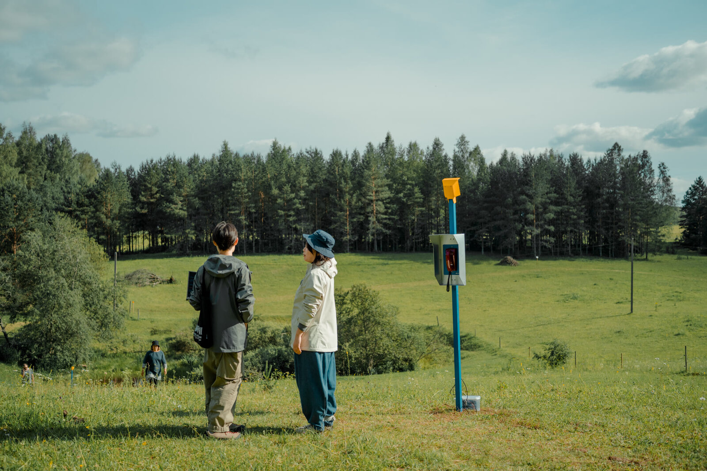
[Nov 2023] BCM is now live on site as part of the We May Be in This Together Duo Exhibition at :iidrr Gallery, New York. Come and visit us in person!
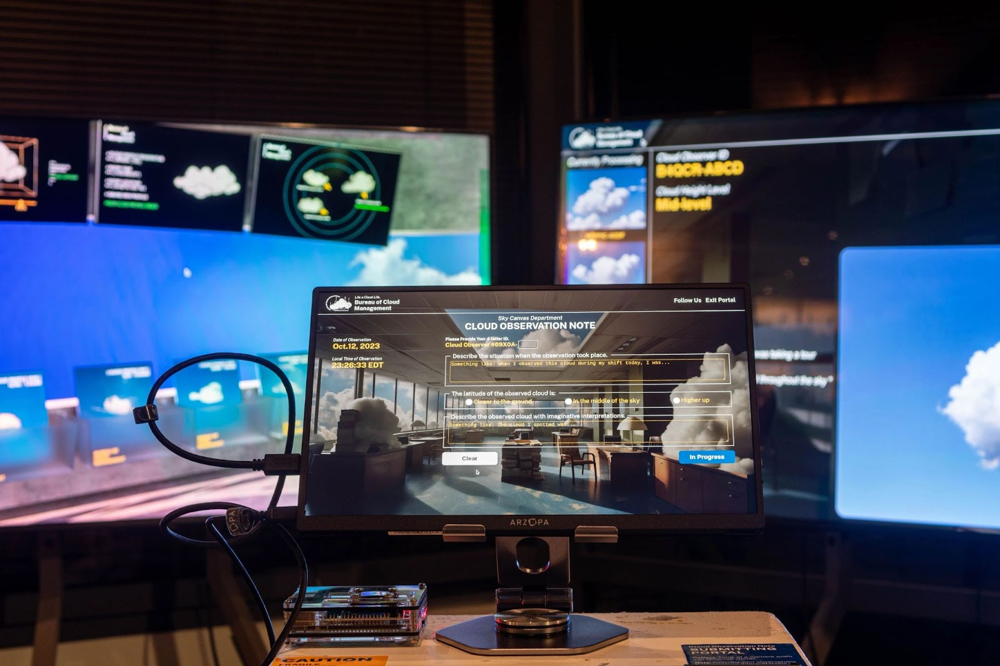
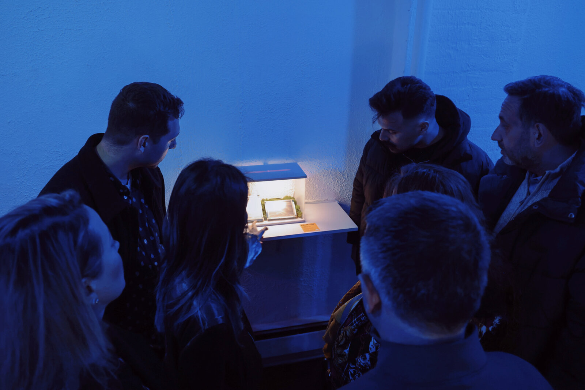
[Oct 2023] BCM is now live on site at Code:ART in Palo Alto, CA.
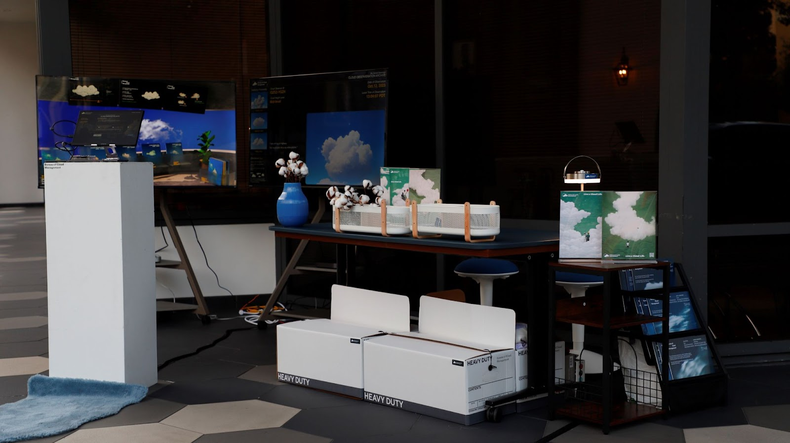
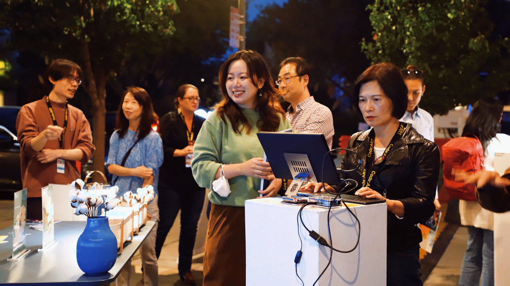
[Jun 2022] You can also visit the BCM official Instagram account to see remote cloud reports from observers around the world. We're still recruiting!
[May 2022] A web version of the BCM portal is now live at https://CLOUDS.MANAGEMENT/. Visit the portal and join us as a remote virtual cloud observer.
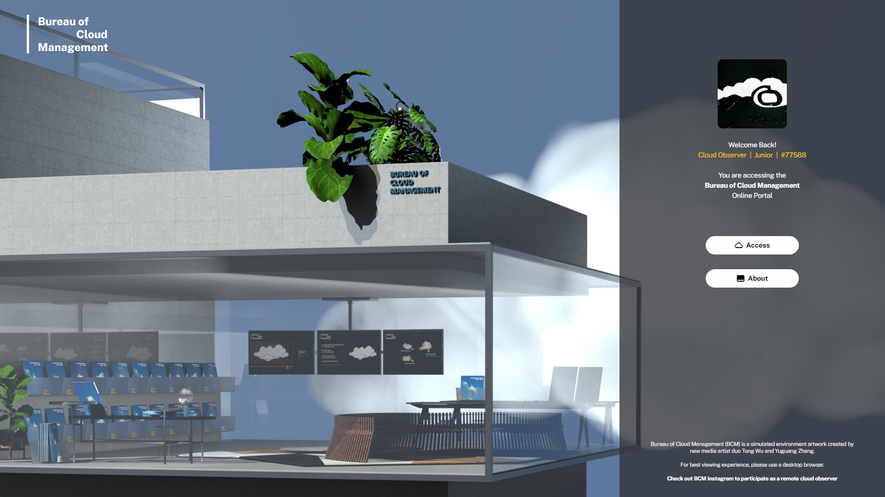
Story
In an era when the "cloud'' is interpreted as the core concept of the global-scaled network of computing systems backing and connecting all the digital interfaces we interact with daily, it is the representation of advance-ness - faster speed, broader access, higher efficiency, and greater connection. In it, we see a future that's more rigorous, efficient, rational, and logical. While the world enjoys the adrenaline brought by technical revolution, feelings of fatigue and languishing are also widely experienced as we are trying to catch up with the technology adaptation and overloaded information.
Are we closer to or further away from being free? Driven by the thought, the artist duo traces back to the original cloud - and its characteristics that are associated with our primitive thinking of and connection with the world.
Perhaps every human being had a moment of looking up to the clouds - those afternoons of laying on the lawn and simply observing the fluffy, cotton-like clouds slowly floating by, constantly changing shapes. These moments draw the initial picture of the dreams of every one of us. Building upon countless gazes and primitive human imagination across time and space, clouds constitute the broadest interconnection of the world while embodying an ultimate form of unrestricted freedom.
Borrowing a bureaucratic structure and modern system interface aesthetics to reconstruct the brisk and day-dreaming experience of observing clouds, the Bureau of Cloud Management is the imaginary space Tong & I created as they wonder, in what form could we, the finite species, be closer to the infinite freedom.
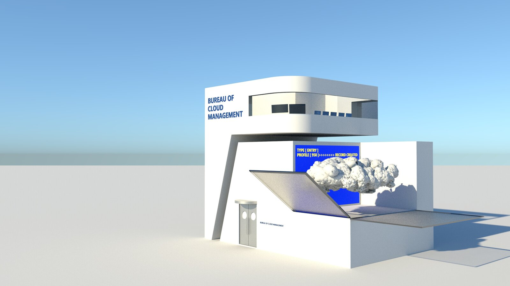
The "Cloud Technology"

Adapted from the short novel "The Submarine at Night" by novelist Chuncheng Chen, we created a simulated environment that depicts the daily working scenes of the Bureau of Cloud Management (BCM), a imaginary government agency which is responsible for monitoring and taking record of each cloud passing by to ensure its lawful entry.
BCM in VR Prototype
The trajectory of a piece of moving cloud we observed near our apartment in Brooklyn was used as the path of finding "cloud prompts" in the UMAP embeddings of Word2Vec. 2D clouds were then generated using CLIP Guided Diffusion according to the prompts, and converted into 3D cloud assets for the imaginary Bureau of Cloud Management created using Unreal 5 and Cinema4D.
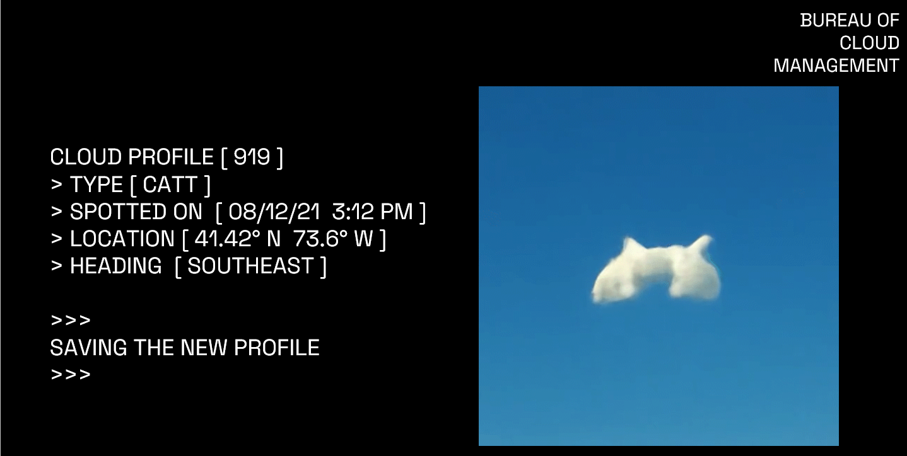
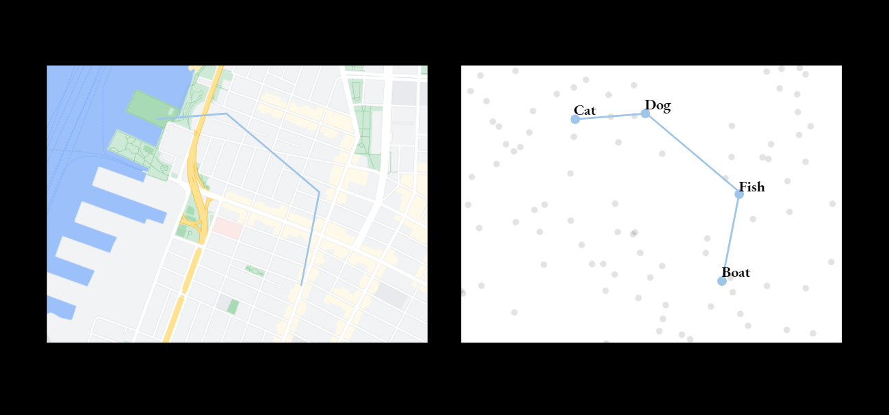

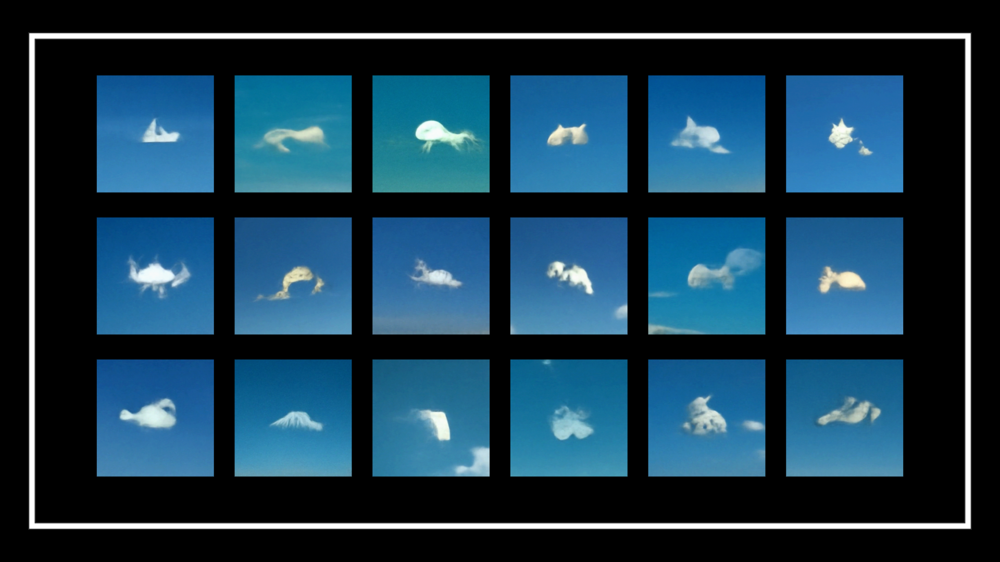
BCM Web Portal
The online version of the project is a web-based experience that presents the monitoring interface of BCM. Participants will be given the identity as a BCM worker and get to record and archive the passing-by clouds. It is one of the four online artworks selected in the INDEX 2022 Open Call and part of the INDEX Biennale 2022 in Braga, Portugal.
We processed the collected folklores and local cultural reports about Braga using GPT-J, an open-source text-generating ML model. Keywords with visual reference were extracted as the text prompts to be fed into a tuned CLIP-Guided Diffusion model to generate various 2D cloud shapes. The cloud shape images were later processed by a custom computer vision pipeline and turned into textures for rendering the slowly floating clouds on the website using Three.js.
The portal is live at https://CLOUDS.MANAGEMENT/.
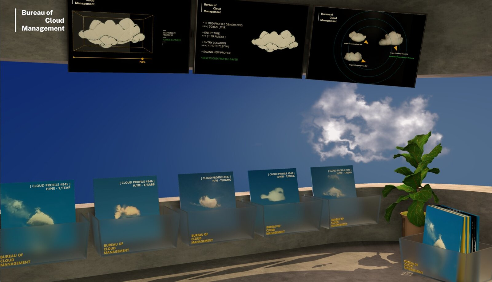